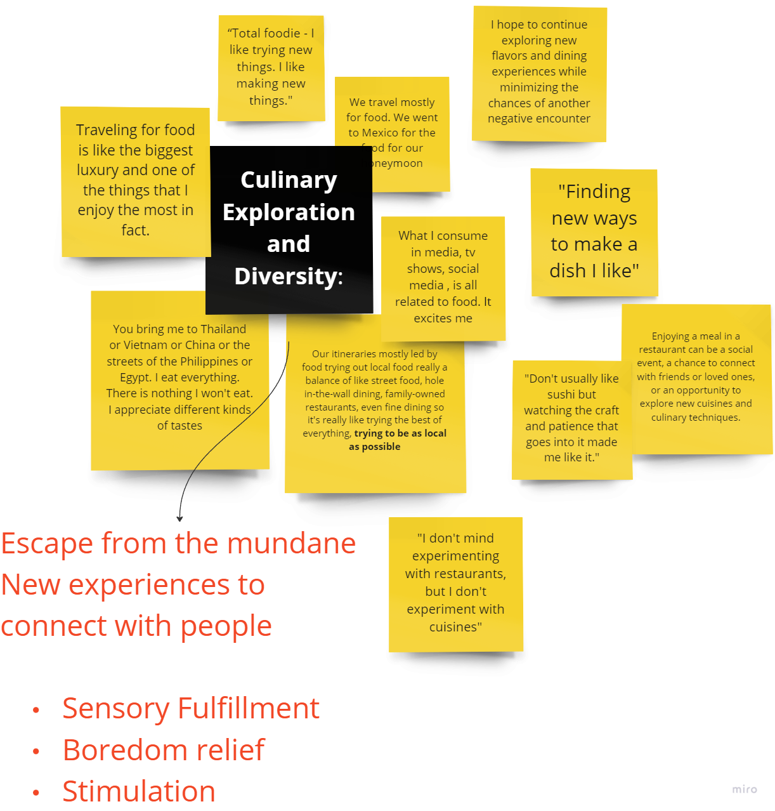
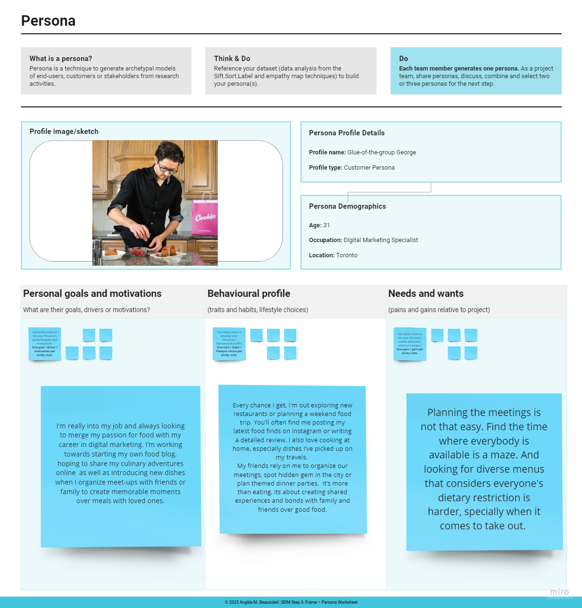

Business Design Fundamentals - Skip the Dishes


1. Skills Gained
Story-telling, Empathy Interviews, Problem Framing,
Persona-development, Prototyping
2. The Project
As part of my Business Design Fundamentals project, we worked with
our client Skip using business design for increasing their market
share.
3. The Problem
4. Design Process
5. Innovation Design Brief
Using secondary research, we created an innovation design brief to
draft our first problem hypothesis and decide on a target segment,
and came up with a recruitment plan for primary research. (The
Innovation Design Brief is a critical document that launches a
design project and aligns teams for business innovation activities.
It integrates an innovation intent, project brief and design brief
and outlines a business challenge as a problem hypothesis.)
6. Field Research
To gather insights, I observed an environment which was food
related, and used the PDP method to record my observations as below.
7. Empathy Interviews
Sorted the information from the empathy interviews, there were some
themes which showed up from which I could develop insights.

8. Personas
Based on the needs, I developed a persona as below

However, after a lot of reiteration and feedback loops the persona
evolved to Bougie Bianca
9. Problem Framing
Constantly reiterated the problem statement for two to three of our
personas the team finally found a problem that drove down to a core
need and settled on that persona which was Bougie Bianca, for which
the problem statement was reframed as:
10. Storytelling
11. Prototype
12. Customer Journey Map
13. Cost Benefits Analysis
14. Next Steps
With this plan we want to know the app’s ability to keep users
interested and returning, indicating the value users derive from it;
determine the financial health and profitability of the app as well
as examine areas for improvement and user satisfaction that affects
retention of existing users.
We keep only a few on the visuals, but the list of KPIS we could address are many more.
A few others are:
User Engagement and Retention KPIs: Daily active users | Type of service they are using | New Feature adoption rate: Financial Performance: Profit margin | Cost per acquisition Customer Satisfaction and Feedback: Quality of service index | Resolution time | Complaint escalation rate | Customer testimonials
We keep only a few on the visuals, but the list of KPIS we could address are many more.
A few others are:
User Engagement and Retention KPIs: Daily active users | Type of service they are using | New Feature adoption rate: Financial Performance: Profit margin | Cost per acquisition Customer Satisfaction and Feedback: Quality of service index | Resolution time | Complaint escalation rate | Customer testimonials
15. References
16. Outcome
The solution was presented in-person to to the sponsoring company
and the feedback received was that the idea could have just been the
one of referral and there was no need to have a complex solution
with many different features.